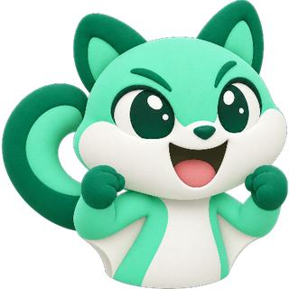
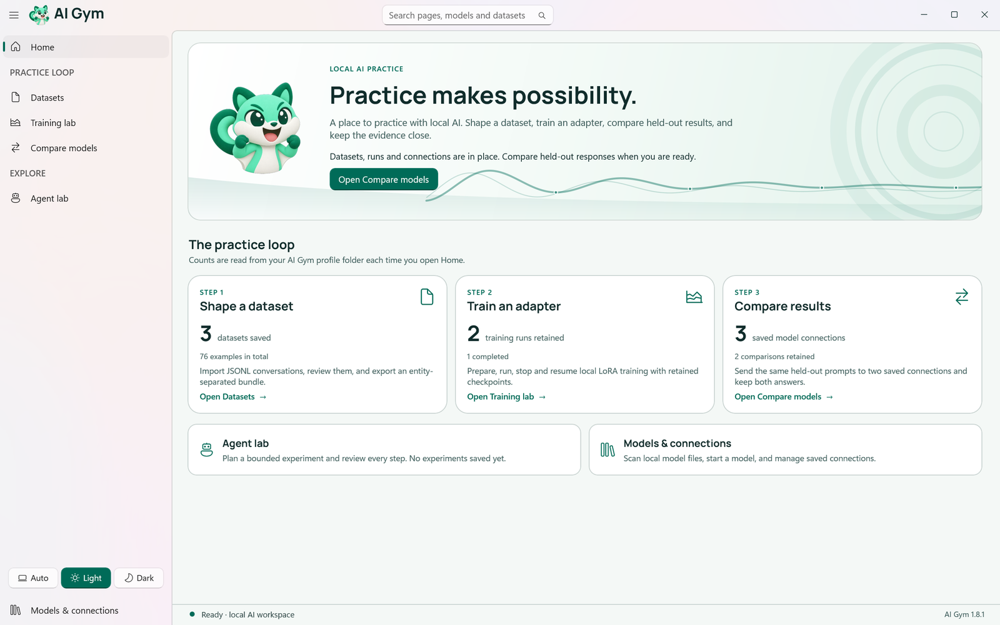
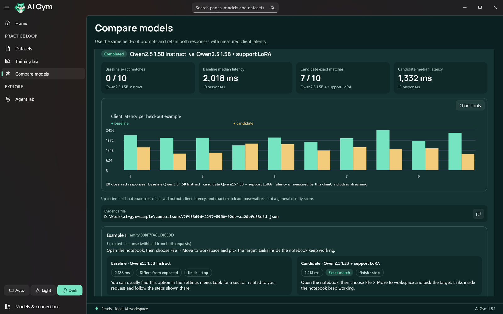
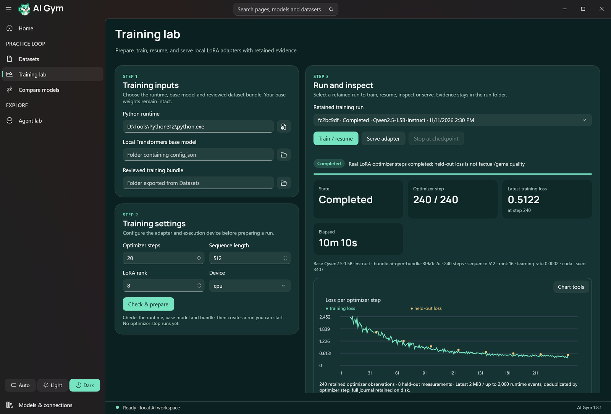
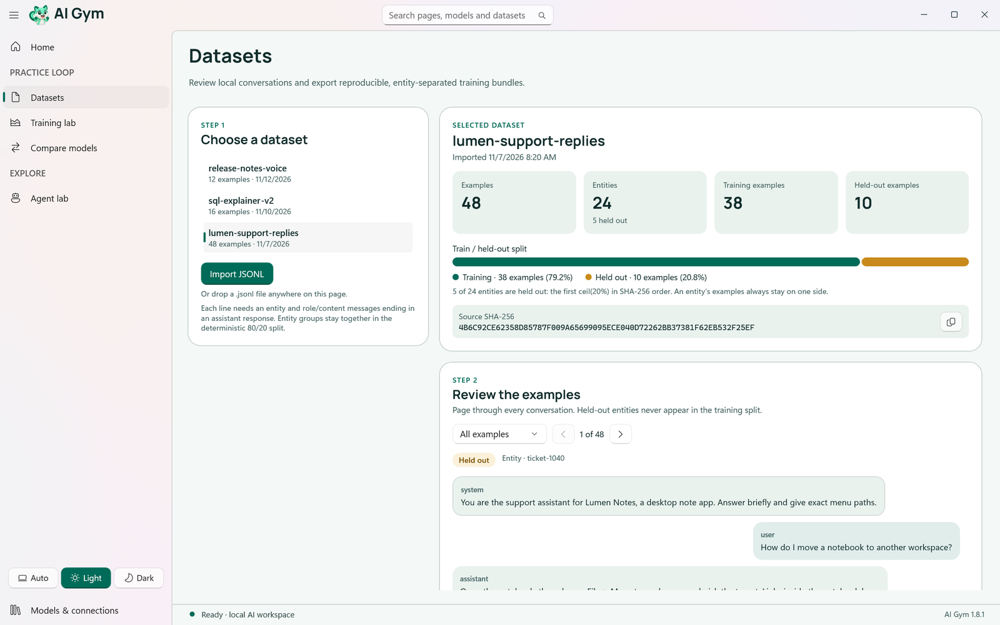

Local AI practice for Windows
Practice makes possibility.
Shape a dataset, train an adapter, compare held-out answers from two models, and keep the evidence on your own PC.
Version 1.8.1 · Installer 91 MB · ZIP 105 MB · Windows x64 · free

What it does
One practice loop, all on your machine
-
Datasets you have actually read
Import JSONL conversations and page through every example. A fixed 80/20 split keeps each entity's examples on one side, and export waits until you approve the review.
-
LoRA training you can stop and resume
Train an adapter on a local Transformers model with your own Python. Watch training and held-out loss, stop at a checkpoint, carry on later.
-
Side-by-side comparisons
Send the same held-out prompts to two saved models. Both answers, exact matches and measured latency go into an evidence file you can reopen any time.
-
Your models, your runtimes
Scan folders for GGUF and Transformers models, start them with llama.cpp or Python, download from Hugging Face, or connect to a server already running on localhost.
-
Agent lab with a review gate
A local chat model plans a small experiment from a fixed set of tools. Nothing runs until you approve each step.
-
Private by default
Everything is plain files in your profile folder, and model connections must stay on your own PC. AI Gym goes online only when you search for or download a model, or set up an optional runtime.
Screenshots
A closer look



Download
Get AI Gym 1.8.1
Free for Windows x64. Pick the installer for a normal per-user install, or the ZIP to run it from any folder.
Installer 91 MB · ZIP 105 MB · All releases
- Windows
- Windows 11 x64 for the installer. The portable ZIP also runs on Windows 10 version 2004 or later.
- Models
- Bring your own. Point AI Gym at GGUF or Transformers models, with llama.cpp's
llama-serverand/or Python (PyTorch, Transformers, PEFT) for training. Nothing is bundled. - First run
- Builds are not code-signed yet, so SmartScreen may warn. Choose More info → Run anyway.
- Checksums
- SHA-256 files are attached to each release.